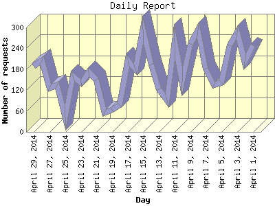

The Daily Report identifies the activity for each day within the reporting period. Remember that one page hit can result in several server requests as the images for each page are loaded.

| Day | Number of requests | Number of page requests | |
|---|---|---|---|
| 1. | April 1, 2014 | 248 | 57 |
| 2. | April 2, 2014 | 201 | 40 |
| 3. | April 3, 2014 | 286 | 88 |
| 4. | April 4, 2014 | 248 | 51 |
| 5. | April 5, 2014 | 142 | 37 |
| 6. | April 6, 2014 | 134 | 47 |
| 7. | April 7, 2014 | 181 | 45 |
| 8. | April 8, 2014 | 293 | 70 |
| 9. | April 9, 2014 | 252 | 54 |
| 10. | April 10, 2014 | 145 | 40 |
| 11. | April 11, 2014 | 259 | 48 |
| 12. | April 12, 2014 | 90 | 38 |
| 13. | April 13, 2014 | 123 | 33 |
| 14. | April 14, 2014 | 194 | 43 |
| 15. | April 15, 2014 | 295 | 65 |
| 16. | April 16, 2014 | 180 | 49 |
| 17. | April 17, 2014 | 206 | 57 |
| 18. | April 18, 2014 | 76 | 21 |
| 19. | April 19, 2014 | 64 | 25 |
| 20. | April 20, 2014 | 55 | 37 |
| 21. | April 21, 2014 | 150 | 36 |
| 22. | April 22, 2014 | 171 | 45 |
| 23. | April 23, 2014 | 141 | 31 |
| 24. | April 24, 2014 | 159 | 77 |
| 25. | April 25, 2014 | 42 | 12 |
| 26. | April 26, 2014 | 134 | 44 |
| 27. | April 27, 2014 | 126 | 49 |
| 28. | April 28, 2014 | 206 | 58 |
| 29. | April 29, 2014 | 190 | 38 |
Most active day April 3, 2014 : 88 pages sent. 295 requests handled.
Daily average: 46 pages sent. 172 requests handled.
This report was generated on April 30, 2014 07:07.
Report time frame April 1, 2014 03:29 to April 29, 2014 23:48.
| Web statistics report produced by: analog 6.0 / Report Magic 2.21 |